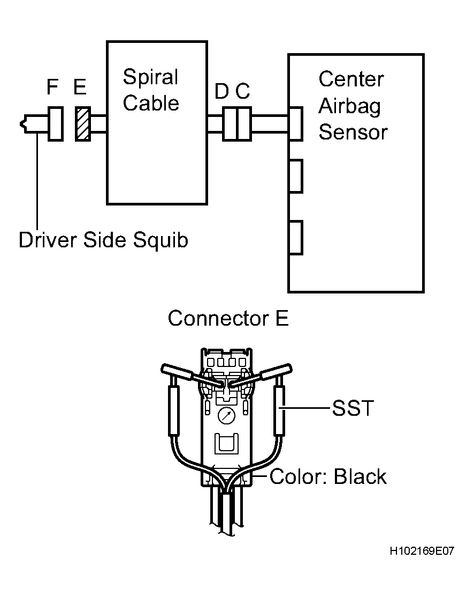

Inspection Procedure
- CHECK STEERING PAD (DRIVER SQUIB)
- Turn the ignition switch OFF.
- Disconnect the cable from the negative (-) battery terminal, and wait for at least 90 seconds.
Disconnect the connectors from the steering pad.
- Connect the white wire side of SST (resistance 2.1 Ω) to the spiral cable connector "E".
SST 09843-18060
CAUTION: Never connect a tester to the steering pad (driver squib) for measurement, as this may lead to a serious injury due to airbag deployment.NOTE:- Do not forcibly insert SST into the terminals of the connector when connecting them.
- Insert SST straight into the terminals of the connector.
- Connect the cable to the negative (-) battery terminal, and wait for at least 2 seconds.
- Turn the ignition switch ON, and wait for at least 60 seconds.
- Clear the DTCs stored in memory (see DTC CHECK / CLEAR ).
- Turn the ignition switch OFF.
- Turn the ignition switch ON, and wait for at least 60 seconds.
- Check for DTCs (see DTC CHECK / CLEAR
).
OK:
DTC B1800, B1801, B1802, B1803 or 51 is not output.
HINT:
DTCs other than DTC B1800, B1801, B1802, B1803 or 51 may be output at this time, but they are not related to this check.
OK : REPLACE STEERING PAD (DRIVER SQUIB)

Courtesy of © TOYOTA, LICENSE AGREEMENT TMS1002NG : Go to Next Step
- CHECK CONNECTOR
- Turn the ignition switch OFF.
- Disconnect the cable from the negative (-) battery terminal, and wait for at least 90 seconds.
- Disconnect SST (resistance 2.1 Ω) from the spiral cable.
- Check that the spiral cable connector (on the steering pad side) is not damaged.
OK:
Lock button is not disengaged, and claw of lock is not deformed or damaged.
NG : REPLACE SPIRAL CABLE
OK : Go to Next Step
- CHECK DRIVER SQUIB CIRCUIT
- Disconnect the connector from the center airbag sensor.
- Connect the cable to the negative (-) battery terminal, and wait for at least 2 seconds.
- Turn the ignition switch ON.
- Measure the voltage of the wire harness side connector.
Standard voltage
TESTER CONNECTION - SPECIFIED CONDITION (VOLTAGE)Tester Connection Specified Condition D+ - Body ground Below 1 V D- - Body ground - Turn the ignition switch OFF.
- Disconnect the cable from the negative (-) battery terminal, and wait for at least 90 seconds.
- Measure the resistance of the wire harness side connector.
Standard resistance
TESTER CONNECTION - SPECIFIED CONDITION (RESISTANCE)Tester Connection Specified Condition D+ - D- Below 1 Ω D+ - Body ground 1 MΩ or higher D- - Body ground - Release the activation prevention mechanism built into connector "B" (see DIAGNOSIS SYSTEM ).
- Measure the resistance of the wire harness side connector.
Standard resistance
TESTER CONNECTION - SPECIFIED CONDITION (RESISTANCE)Tester Connection Specified Condition D+ - D- 1 MΩ or higher
OK : REPLACE CENTER AIRBAG SENSOR ASSEMBLY
NG : Go to Next Step
- CHECK INSTRUMENT PANEL WIRE
- Restore the released activation prevention mechanism of connector "B" to its original position.
- Disconnect the instrument panel wire connector from the spiral cable.
- Connect the cable to the negative (-) battery terminal, and wait for at least 2 seconds.
- Turn the ignition switch ON.
- Measure the voltage of the wire harness side connector.
Standard voltage
TESTER CONNECTION - SPECIFIED CONDITION (VOLTAGE)Tester Connection Specified Condition A13-1 (D+) - Body ground Below 1 V A13-2 (D-) - Body ground - Turn the ignition switch OFF.
- Disconnect the cable from the negative (-) battery terminal, and wait for at least 90 seconds.
- Measure the resistance of the wire harness side connector.
Standard resistance
TESTER CONNECTION - SPECIFIED CONDITION (RESISTANCE)Tester Connection Specified Condition A13-1 (D+) - A13-2 (D-) Below 1 Ω A13-1 (D+) - Body ground 1 MΩ or higher A13-2 (D-) - Body ground - Release the activation prevention mechanism built into connector "B" (see DIAGNOSIS SYSTEM ).
- Measure the resistance of the wire harness side connector.
Standard resistance
TESTER CONNECTION - SPECIFIED CONDITION (RESISTANCE)Tester Connection Specified Condition A13-1 (D+) - A13-2 (D-) 1 MΩ or higher
NG : REPAIR OR REPLACE INSTRUMENT PANEL WIRE
OK : REPLACE SPIRAL CABLE